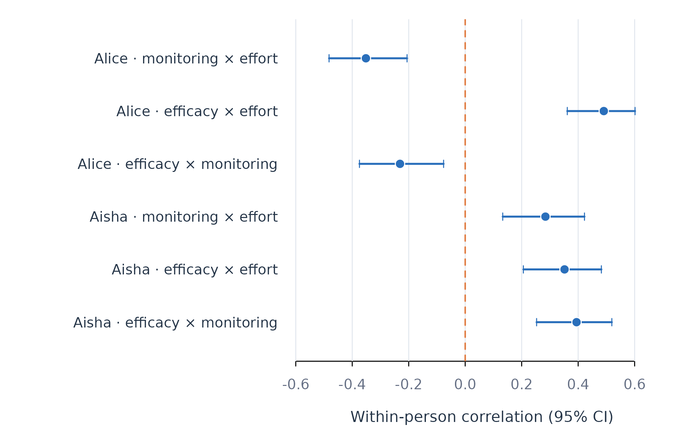

Within-Person Correlation with correlate_persons()
Source:vignettes/correlate-persons.Rmd
correlate-persons.RmdAnalytic question
correlate_persons() estimates how two variables covary
within each person. The function takes repeated measurements, a person
identifier, and at least two variables. It returns one row per person
and variable pair with the correlation, complete-pair count, confidence
interval, and p-value.
correlate_persons() does not pool occasions across
learners. A positive coefficient for one learner means that the learner
tends to report higher values on both variables at the same occasions.
It does not mean that learners with higher average values on one
variable also have higher averages on the other variable.
Estimate the correlations
correlate_persons() computes confidence intervals with
Fisher’s transformation. The time argument fixes row order
for consistency with other person-level analyses, although
contemporaneous correlation itself is unchanged by row order. Table 1
keeps two learners and three variable pairs.
correlations <- correlate_persons(analysis_data, id = "name", vars = c("efficacy", "monitoring", "effort"), time = "day", subject = c("Aisha", "Alice"))
correlations
#> PERSON-SPECIFIC CORRELATIONS
#> Grouping name
#> People 2
#> Pairs 3
#>
#> subject x y n r 95% CI p
#> ------------------------------------------------------------------------------
#> Aisha efficacy monitoring 156 0.394 [0.25, 0.52] < 1e-04
#> Aisha efficacy effort 156 0.352 [0.21, 0.48] < 1e-04
#> Aisha monitoring effort 156 0.284 [0.13, 0.42] 0.000325
#> Alice efficacy monitoring 156 -0.231 [-0.37, -0.08] 0.003736
#> Alice efficacy effort 156 0.491 [0.36, 0.60] < 1e-04
#> Alice monitoring effort 156 -0.352 [-0.48, -0.21] < 1e-04correlate_persons() finds positive associations among
all three variables for Aisha in Table 1. Alice has a negative
efficacy-monitoring association. The contrast shows why one pooled
coefficient cannot represent every learner. The confidence intervals
quantify sampling uncertainty for each person and pair.
Plot the person-specific coefficients
The coefficient-and-interval display preserves the sign, magnitude, and uncertainty of every association. Direct pair labels prevent the three correlations for a learner from being mistaken for repeated estimates of one quantity.
correlation_labels <- paste(correlations$subject,
paste(correlations$x, correlations$y, sep = " × "),
sep = " · ")
forest_plot(correlations$r, correlations$conf_low, correlations$conf_high,
correlation_labels, xlab = "Within-person correlation (95% CI)")
Figure 1. Distribution of within-person correlations for two learners.
Figure 1 shows that all three displayed associations are positive for Aisha. Alice’s efficacy-effort association is positive, while both correlations involving monitoring are negative. The intervals make the disagreement between people visible; the figure does not identify a causal direction.
Assumptions and failure checks
correlate_persons() assumes paired numeric observations
and an approximately linear association. The estimate can be unstable
when the number of complete pairs is small. The min_n
argument sets the minimum pair count. Constant variables return missing
correlations because their standard deviations are zero.
correlate_persons() reports contemporaneous association.
Serial dependence can make ordinary correlation intervals optimistic
because adjacent observations may not be independent. Lagged prediction
requires a temporal model such as fit_lm() with lagged
predictors or one of the network estimators. Correlation alone does not
adjust for other variables.
When to use which
correlate_persons() is appropriate for an initial
pairwise account of within-person association. fit_lm() is
appropriate when one outcome is conditional on several predictors.
fit_within_between() is appropriate when within-person and
between-person effects must be estimated separately. Dynamic-network
models are appropriate when several variables act jointly as outcomes
over time.